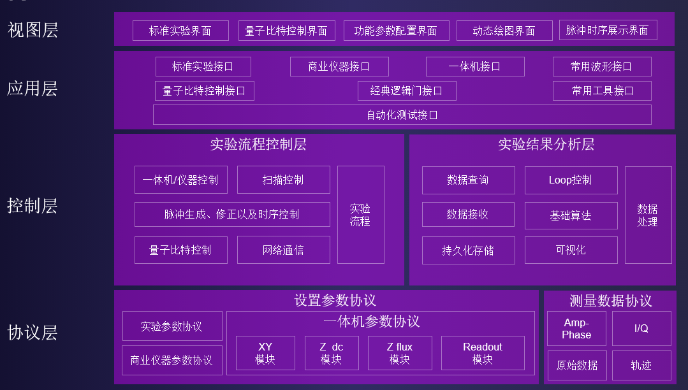
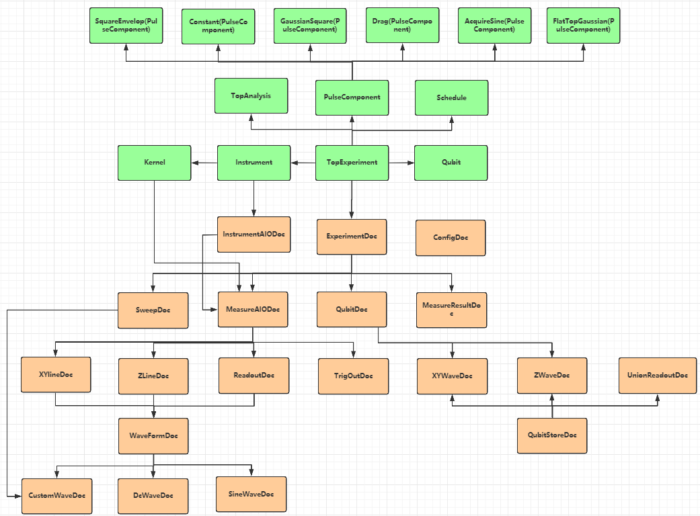

结构及数据流程¶
pyQCat组织结构¶
pyQCat 框架

pyQCat 主要有实验包experiment、数据库映射包database、实验流程执行包flow、波形包pulse、比特包qubit、设备包instrument以及辅助工具tool、gate、log、errors、parameters等一些辅助包构成，基本结构如下图所示。

experiment： 此包中封装了各种比特实验的接口
database： 此包中封装了各种实体类的数据库映射，主要有
ExperimentDoc、QubitStoreDoc、MeasureAIODoc、MeasureResultDoc等qubit： 此包中定义了比特实体类，包含各种待校准属性参数，如读取频率、读取功率、驱动频率、驱动功率等
instrument： 此包中定义了实验所用仪器远程控制的封装类，使用此包中的接口可以实现远程控制设备施加指定的波形
flow： 此包对单比特表征流程以及多比特实验等流程进行了组合，用户可以根据
yaml文件灵活选择需要执行的实验接口pulse： 此包封装了各种实验所需的波形实体类，同时包含波形校准的工具类
PulseCorrectiontool： 此包定义了各种流程执行工具，典型有绘图功能、文件存储功能、集成算法、解析文件功能、定义公式等等
pyQCat数据传递流程¶
根据具体实验方法原理，由用户定义实验参数，结合数据库中配置的默认实验信息，将实验参数封装到MeasureAIODoc数据库映射类中，然后统一组合成ExperimentDoc存储至数据库，最后由上位机获取ExperimentDoc执行实验，实验运行结果存放在MeasureResultDoc中同样存储至数据库，最终还是由pyQCat从数据库中获取实验结果，进行拟合、分析、绘图、保存等一系列操作。

下图展示了典型类对应关系，详细内容可见API文档
